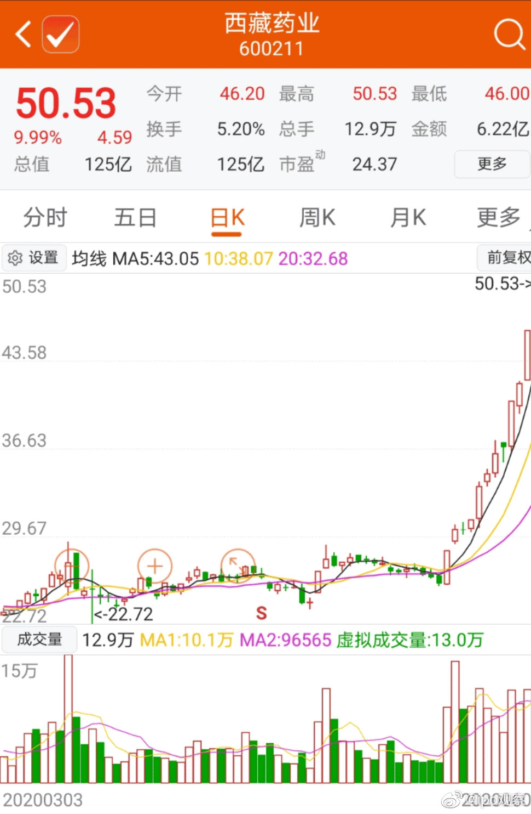

希望判5年以上，同时大力宣传。@网易财经:#21楼扔3块瓷砖砸伤2人被批捕#【男子发起床气从21楼扔下3块瓷砖，监控拍下可怕瞬间】近日，重庆江北某小区，住在21层的任某因女友的姐姐登门拜访爆发起床气，一怒之下将三块瓷砖扔到了楼下，砸伤多人。随后被警方以涉嫌危害公共安全罪刑拘。5日，重庆市江北区检察院以涉嫌以危险方法危害公共安全罪，对任某批准逮捕。小央视频的秒拍视频 166万次播放 01:12
2018年1月底、2月初，大盘见顶。绝大多数股票开始跌。然而一直到5月底，医药依然在一枝独秀的创新高。6月，开始出台“一致性评价”政策。同时医保开始控费，医药开始下跌。之后，随着“4+7带量采购”等政策持续推出，医药不断下跌。到了2019年1月，各种配套改革政策频繁出台，加上A股进入钻石坑，医药被杀到了7000点以下，估值达到十年最低。当时已经几乎没有人再看好医药，医药在基金配置中连标配都达不到。你打开各种公众号自媒体，都是对医药行业的悲观。所以当时有朋友发私信要“救我一命”，其实是可以理解的。因为当时你找不到看好医药的人。2019年，医药上涨34%，医疗上涨48%；2020年，医药上涨27%，医疗上涨37%。直到今天，依然在创新高。我想说的，还是之前说过无数次的。有时候，你看越多信息，只会让你的收益变低。每天都有信息给你，并不意味着能提高你的收益率。尤其是很多信息源根本毫无价值，只是因为数量多，善于拼凑信息，才会有机会浪费你的时间。不会死的品种，大幅暴跌后的利空，未必是最后一根稻草。也许那是最好的机会。最后再说一次。价格与“利好利空”，很多时候并不一一对应。股价反映的是若干时间以后的信息，而非现在。做分析，要分析第一层信息，第二层价格，第三层反馈。如果你只停留在第一层，那就是低位斩仓高位接盘的善财童子。
拿不住最重要的原因是：穷。@ipo观察:【潜伏三年一把近翻倍！葛卫东守得云开见月明】前几天刚刚豪掷15亿元参与兆易创新定增的葛卫东，在他的“小仓位”上也迎来了大丰收：持股快三年的西藏药业，在过去12个交易日，股价上涨了95%。葛卫东持有西藏药业近三年，就在一个月前，这笔投资还处于盈亏平衡状态，如果往前推到去年底，甚至还处于浮亏状态。对于普通人来说，持有一只个股两年半还亏损的话，可能早就离场了。不得不说，亏得起、熬得住，也是最后赚到钱的重要原因。（上证报）